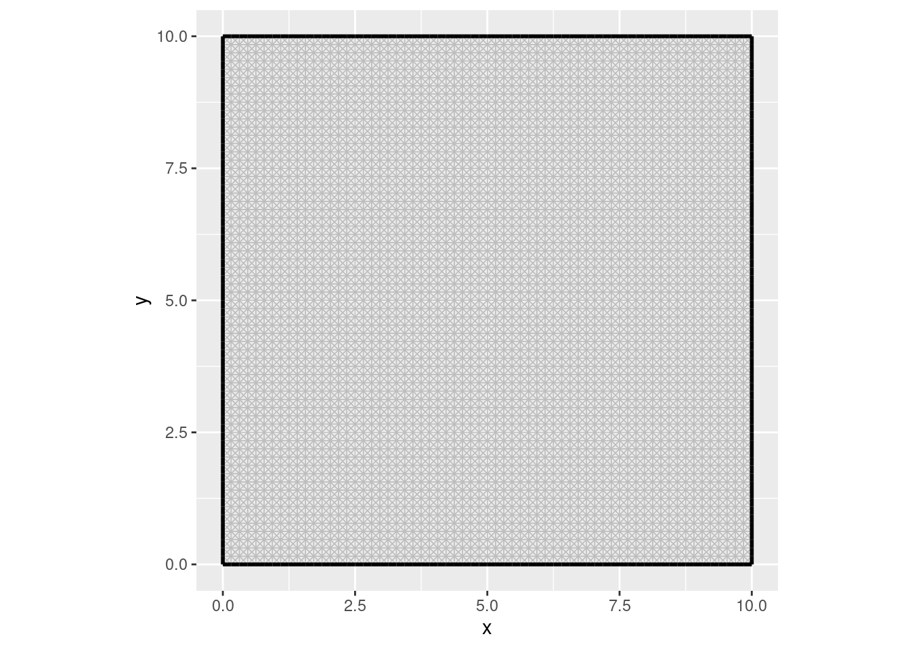
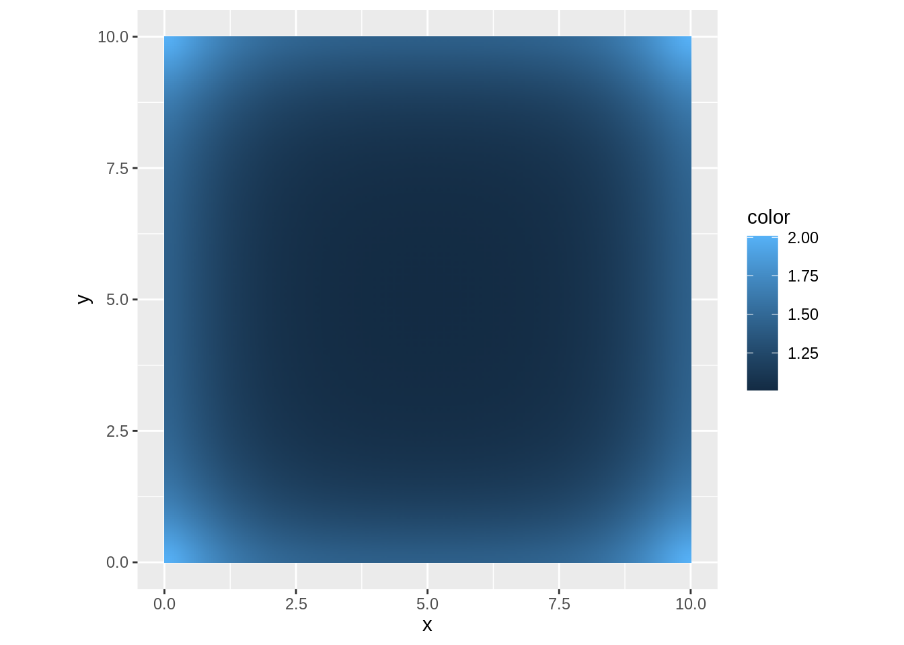
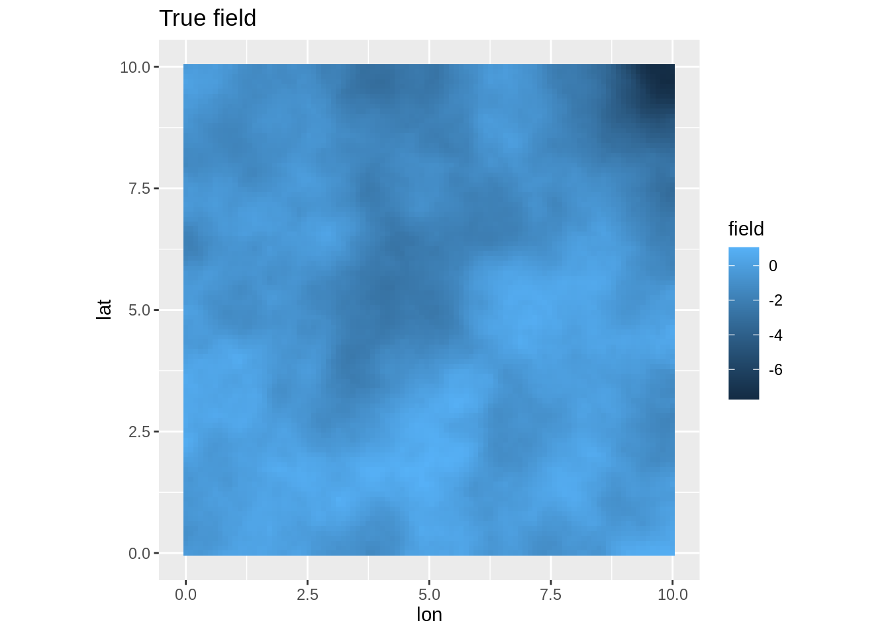
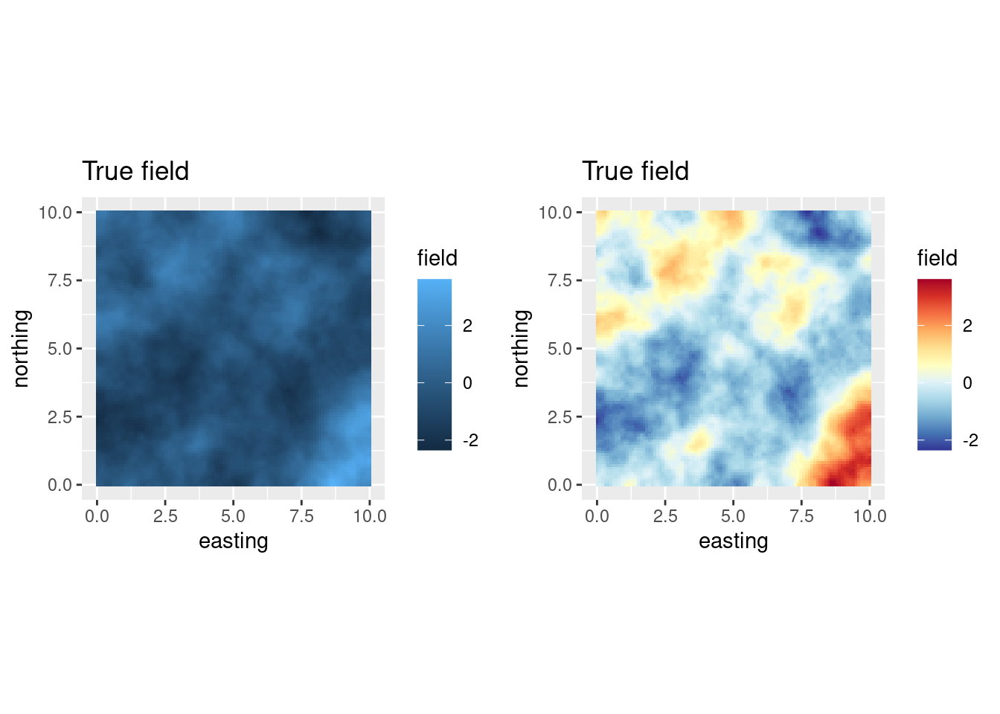
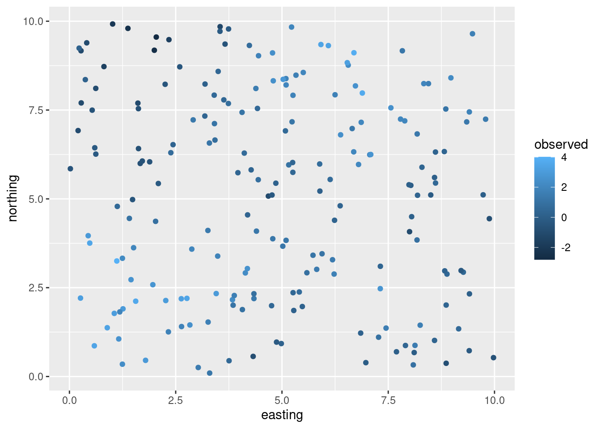
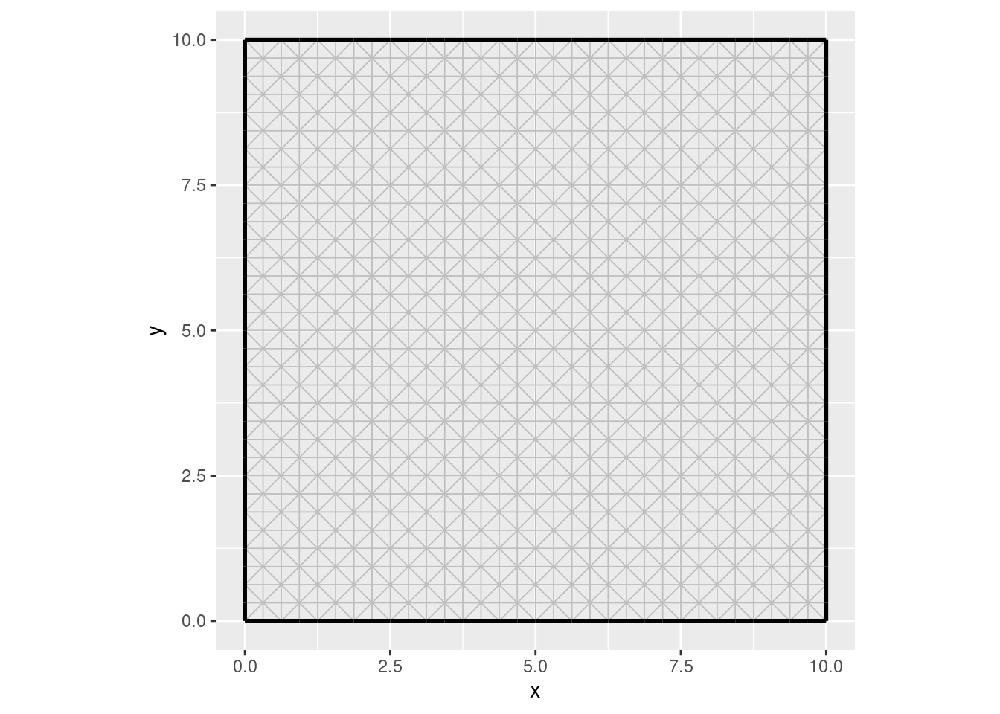
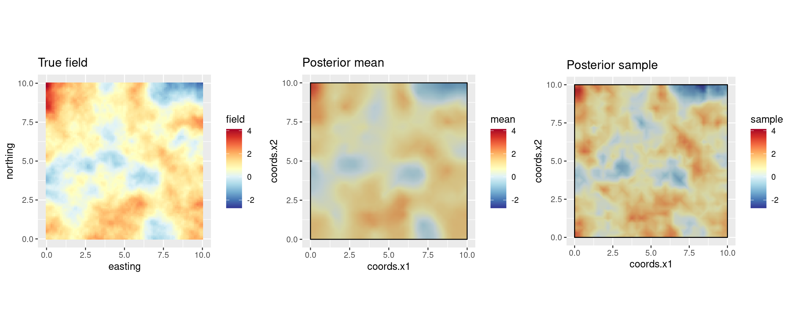
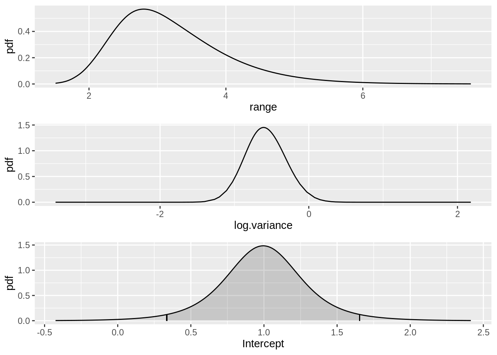
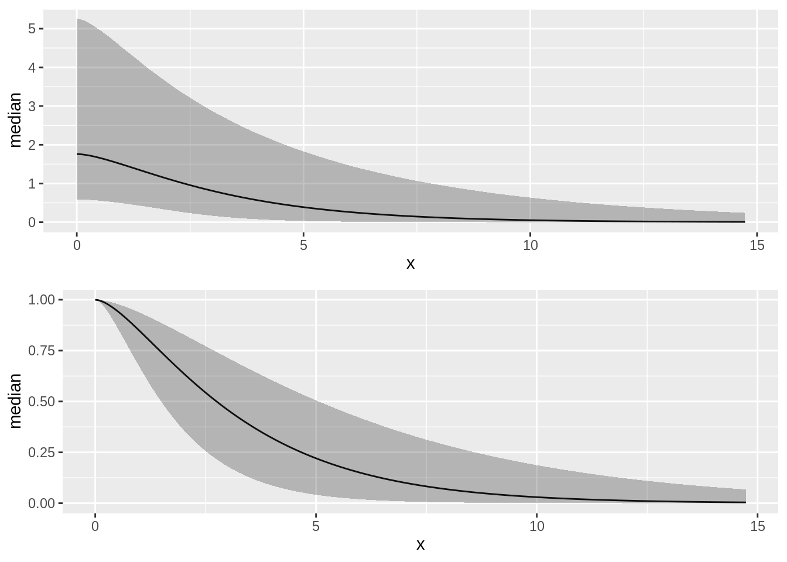
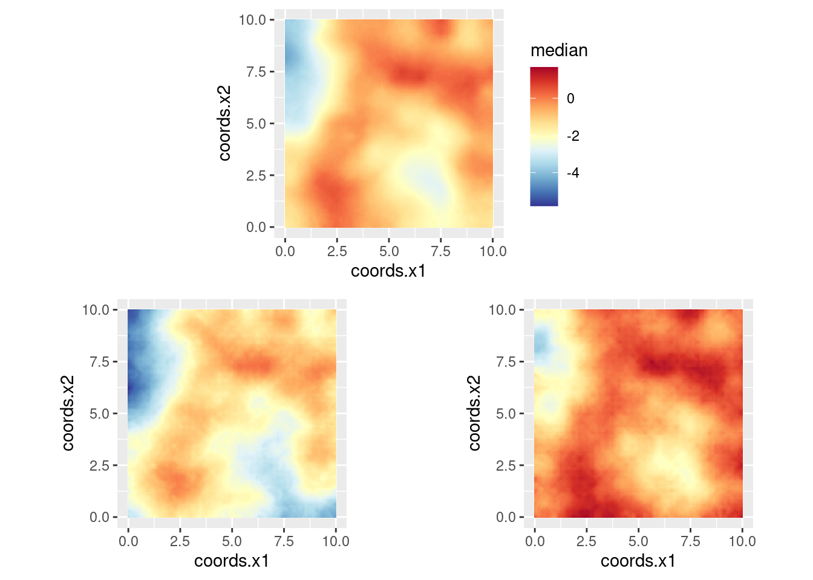

Random Fields in 2D
Finn Lindgren
Generated on 2023-06-14
Source:vignettes/web/random_fields_2d.Rmd
random_fields_2d.RmdSetting things up
Make a shortcut to a nicer colour scale:
colsc <- function(...) {
scale_fill_gradientn(
colours = rev(RColorBrewer::brewer.pal(11, "RdYlBu")),
limits = range(..., na.rm = TRUE)
)
}Modelling on 2D domains
We will now construct a 2D model, generate a sample of a random field, and attempt to recover the field from observations at a few locations. Tomorrow, we will look into more general mesh constructions that adapt to irregular domains.
First, we build a high resolution mesh for the true field, using low level INLA functions
bnd <- spoly(data.frame(easting = c(0, 10, 10, 0), northing = c(0, 0, 10, 10)))
mesh_fine <- inla.mesh.2d(boundary = bnd, max.edge = 0.2)
ggplot() +
gg(mesh_fine) +
coord_equal()
# Note: the priors here will not be used in estimation
matern_fine <-
inla.spde2.pcmatern(mesh_fine,
prior.sigma = c(1, 0.01),
prior.range = c(1, 0.01)
)
true_range <- 4
true_sigma <- 1
true_Q <- inla.spde.precision(matern_fine, theta = log(c(true_range, true_sigma)))What is the pointwise standard deviation of the field? Along straight boundaries, the variance is twice the target variance. At corners the variance is 4 times as large.
true_sd <- diag(inla.qinv(true_Q))^0.5
ggplot() +
gg(mesh_fine, col = true_sd) +
coord_equal()
Generate a sample from the model:
true_field <- inla.qsample(1, true_Q)[, 1]
truth <- expand.grid(
easting = seq(0, 10, length = 100),
northing = seq(0, 10, length = 100)
)
truth$field <- fm_evaluate(
mesh_fine,
loc = as.matrix(truth),
field = true_field
)
coordinates(truth) <- c("easting", "northing")
truth <- as(truth, "SpatialPixelsDataFrame")
pl_truth <- ggplot() +
gg(truth, mapping = aes(easting, northing, fill = field)) +
coord_equal() +
ggtitle("True field")
pl_truth
## Or with another colour scale:
csc <- colsc(truth$field)
multiplot(pl_truth, pl_truth + csc, cols = 2)
Extract observations from some random locations:
n <- 200
mydata <- data.frame(easting = runif(n, 0, 10), northing = runif(n, 0, 10))
mydata$observed <-
fm_evaluate(
mesh_fine,
loc = as.matrix(mydata),
field = true_field
) +
rnorm(n, sd = 0.4)
coordinates(mydata) <- c("easting", "northing")
ggplot() +
gg(mydata, aes(col = observed))
Estimating the field
Construct a mesh covering the data:
mesh <- inla.mesh.2d(boundary = bnd, max.edge = 0.5)
ggplot() +
gg(mesh) +
coord_equal()
Construct an SPDE model object for a Matern model:
matern <-
inla.spde2.pcmatern(mesh,
prior.sigma = c(10, 0.01),
prior.range = c(1, 0.01)
)Specify the model components:
cmp <- observed ~ field(coordinates, model = matern) + Intercept(1)Fit the model and inspect the results:
Predict the field on a lattice, and generate a single realisation from the posterior distribution:
pix <- fm_pixels(mesh, nx = 200, ny = 200, format = "sp")
pred <- predict(
fit, pix,
~ field + Intercept
)
samp <- generate(fit, pix,
~ field + Intercept,
n.samples = 1
)
pred$sample <- samp[, 1]Compare the truth to the estimated field (posterior mean and a sample from the posterior distribution):
pl_posterior_mean <- ggplot() +
gg(pred) +
gg(bnd) +
ggtitle("Posterior mean") +
coord_fixed()
pl_posterior_sample <- ggplot() +
gg(pred, aes(fill = sample)) +
gg(bnd) +
ggtitle("Posterior sample") +
coord_fixed()
# Common colour scale for the truth and estimate:
csc <- colsc(truth$field, pred$mean, pred$sample)
multiplot(pl_truth + csc,
pl_posterior_mean + csc,
pl_posterior_sample + csc,
cols = 3
)
Plot the SPDE parameter and fixed effect parameter posteriors.
int.plot <- plot(fit, "Intercept")
spde.range <- spde.posterior(fit, "field", what = "range")
spde.logvar <- spde.posterior(fit, "field", what = "log.variance")
range.plot <- plot(spde.range)
var.plot <- plot(spde.logvar)
multiplot(range.plot, var.plot, int.plot)
Look at the correlation function if you want to:
corplot <- plot(spde.posterior(fit, "field", what = "matern.correlation"))
covplot <- plot(spde.posterior(fit, "field", what = "matern.covariance"))
multiplot(covplot, corplot)
You can plot the median, lower 95% and upper 95% density surfaces as
follows (assuming that the predicted intensity is in object
pred).
csc <- colsc(
pred@data["median"],
pred@data["q0.025"],
pred@data["q0.975"]
) ## Common colour scale from SpatialPixelsDataFrame
gmedian <- ggplot() +
gg(pred["median"]) +
coord_equal() +
csc
glower95 <- ggplot() +
gg(pred["q0.025"]) +
coord_equal() +
csc +
theme(legend.position = "none")
gupper95 <- ggplot() +
gg(pred["q0.975"]) +
coord_equal() +
csc +
theme(legend.position = "none")
multiplot(gmedian, glower95, gupper95,
layout = matrix(c(1, 1, 2, 3), byrow = TRUE, ncol = 2)
)